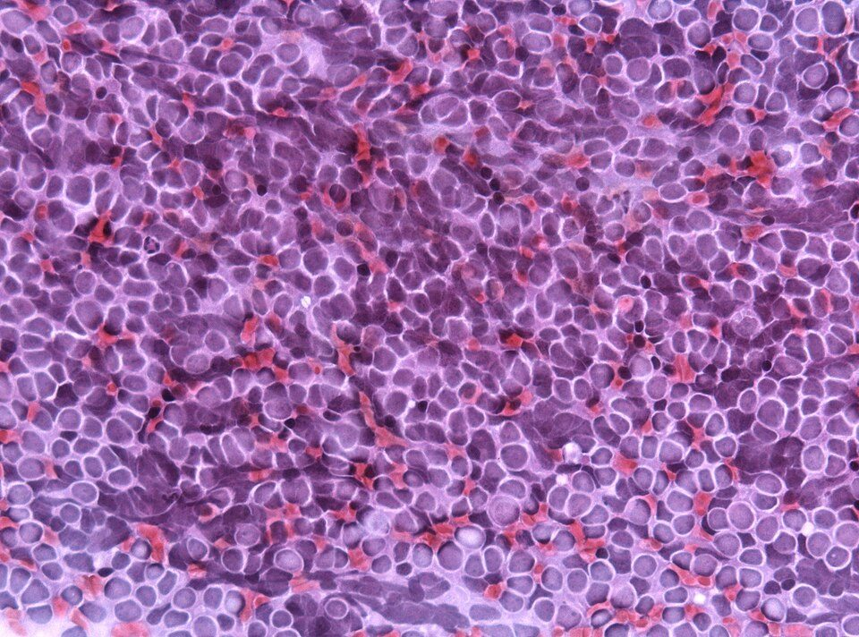

General information only. It does not replace advice from your care team and should not be used to choose a treatment.


At a glance
| How common | 20% of childhood brain tumours |
| Who | Children aged 3 to 10; also young adults |
| Where | Cerebellum (posterior fossa) |
| Molecular groups | WNT, SHH, group 3 and group 4 |
| Treatment | Surgery, craniospinal radiotherapy and chemotherapy |
| Survival | 70-80% at five years |
Symptoms
Morning vomiting, headache, unsteady walking (ataxia), double vision, from hydrocephalus and pressure on the cerebellum.
Molecular groups
| Group | Features | Outlook |
|---|---|---|
| WNT | Older children; CTNNB1 mutation | Excellent (> 90%) |
| SHH | Infants and adults; Gorlin or Li-Fraumeni syndromes | Variable |
| Group 3 | Infants and children; MYC amplification | The worst |
| Group 4 | The most common | Intermediate |
Treatment
- Maximal surgery, with treatment of hydrocephalus.
- Whole central nervous system radiotherapy (brain and spine), with protons to reduce late effects; avoided or delayed under 3-4 years.
- Chemotherapy.
- Reducing treatment for the WNT group is being studied.
Late effects
Learning, growth, hormone and hearing problems, and cerebellar mutism syndrome after surgery. Long-term follow-up in survivorship clinics is needed.
See also: Childhood cancer, Brain tumours, Ependymoma.
History · Medicapedia
Medulloblastoma in the history of medicine
How it was discovered, who studied it and how its treatment changed over the centuries, told on Medicapedia, our sister site on the history of medicine.
Read the history on Medicapedia ↗Sources
- Northcott PA, et al. Medulloblastoma. Nat Rev Dis Primers. 2019;5:11. doi:10.1038/s41572-019-0063-6
- Louis DN, et al. The 2021 WHO Classification of Tumors of the Central Nervous System: a summary. Neuro Oncol. 2021;23:1231-1251. doi:10.1093/neuonc/noab106
- Children's Cancer and Leukaemia Group (CCLG). cclg.org.uk